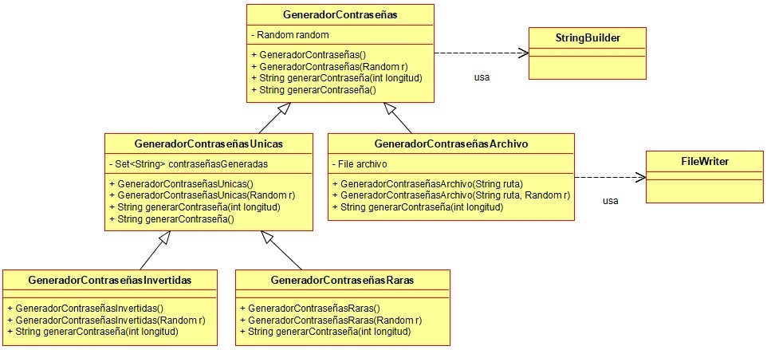

Ejercicio 16 : Siguiendo el diagrama de los ejercicios anteriores, programa la clase GeneradorContraseñasArchivo, que es un tipo de generador de contraseñas que guarda todas las contraseñas que genera en un archivo.

-
En las propiedades posee un File que indica la ruta del archivo donde se irán guardando las contraseñas generadas.
-
Las contraseñas se generan como en el ejercicio 14, pero cada vez que se genera una, deberá añadirse al archivo (se añadirá al final del archivo una línea con la nueva contraseña). Se recomienda usar la clase FileWriter para programar el método.